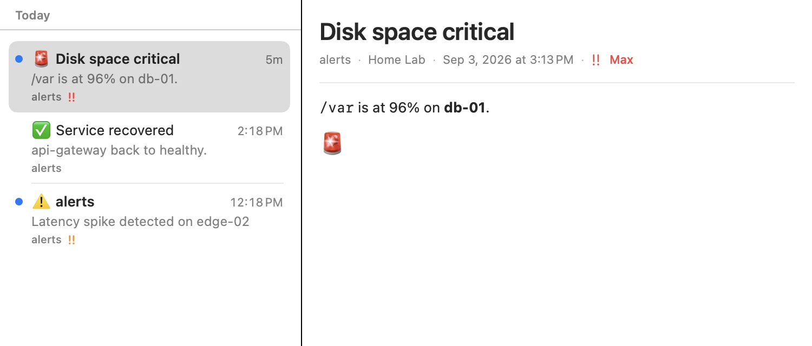
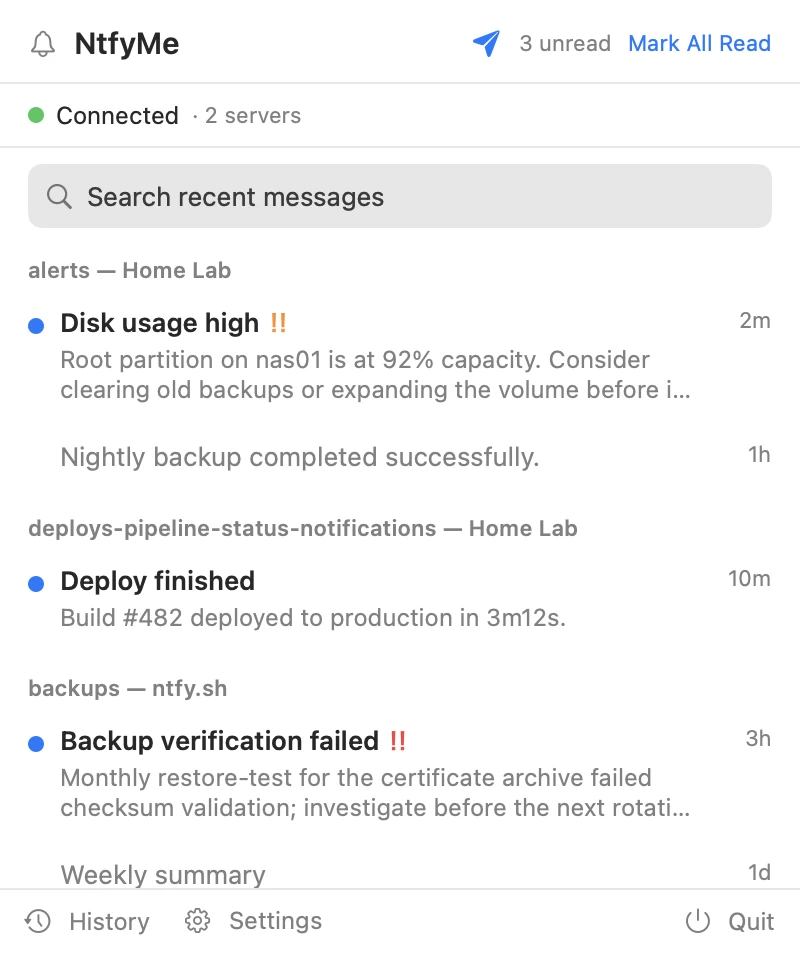
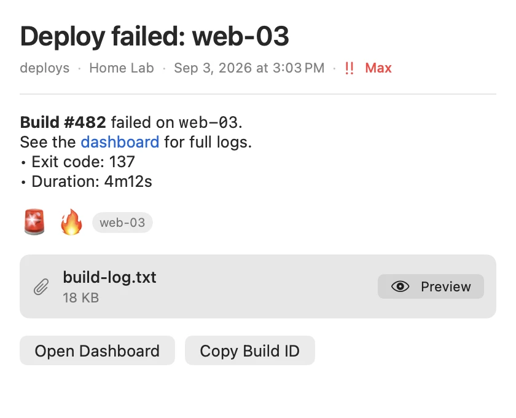

NtfyMe watches the topics you follow and delivers every message natively, with a searchable archive of everything it has seen.


Priority-aware macOS notifications, not a browser tab pretending to be one.
A searchable archive of every message, with unread badges, Quick Look, and markdown rendered the way it was sent.
A compose window that validates topics as you type and previews the notification before it arrives.

The message doesn't vanish with the banner. The archive keeps the title, body, tags, attachment, links, and actions — the useful part of the alert, not just the fact that it happened.
The whole app — Swift, SwiftUI, and a little stubbornness — is on GitHub under the MIT license. Releases are signed with a Developer ID certificate and notarized by Apple, so they open without a security warning, and the app updates itself through Sparkle, with every update verified against a key only the project controls.
MIT licensed. Not affiliated with the ntfy project — just built on it with gratitude.